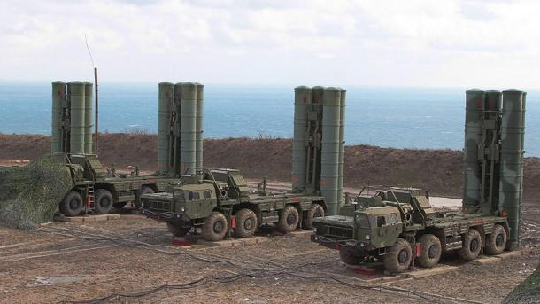

Az SZ–400 Triumf légvédelmi rendszer rakétarendszer amit az 1990-es években fejlesztettek ki Oroszországba. 2007 óta áll szolgálatban az Orosz Fegyveres Erőknél. Az SZ–400-as fegyverrendszer négyfajta rakéta alrendszerrel fedi le a teljes légvédelmi spektrumot. Ezek a „rendkívül nagy hatótávolságú” 40N6 (400 km), „nagy hatótávolságú” 48N6 (250 km), „közepes hatóválságú” 9M96E2 (120 km), illetve a „rövid hatóválságú” 9M96E (40 km) rakéta. Egy rendszer összesen 8 légvédelmi rakétaosztályból áll, ami közel 72 indítóállványt és maximálisan 384 db légvédelmi rakétát jelent amik közé tartoznak azok a rakéták is, amik 250 km vagy annál közelebb lévő célpontok ellen bevethetőek. A rakétákat egy gázrendszer lövi ki a vetőcsövekből kb. 30 méteres magasságba, ahol bekapcsol a rakétahajtómű. Rendszer reagálási ideje kevesebb mint 10 másodperc. A rendszer képes közúton (60 km/h) és terepen is közlekedni 25 km/h.
